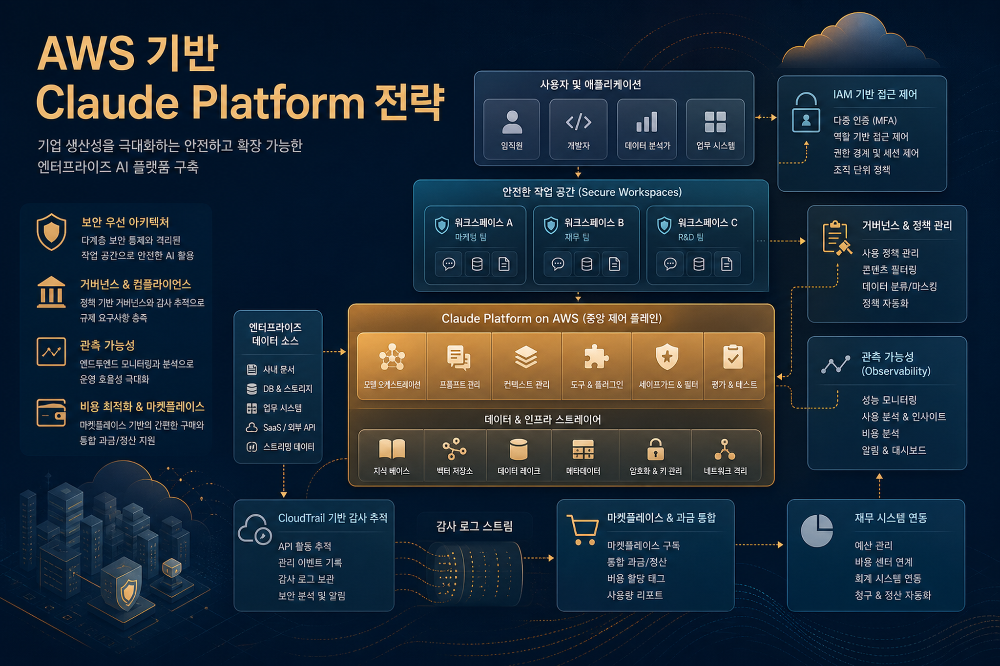
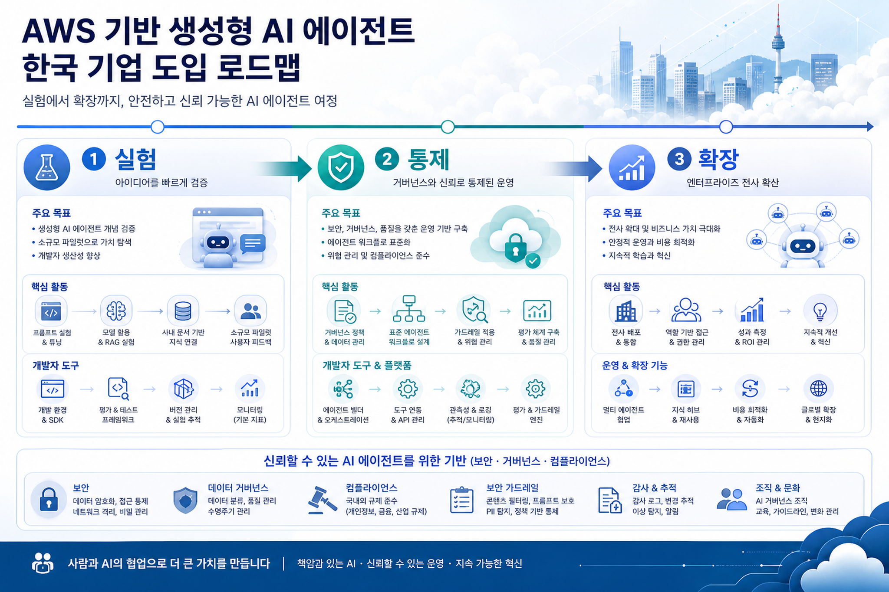
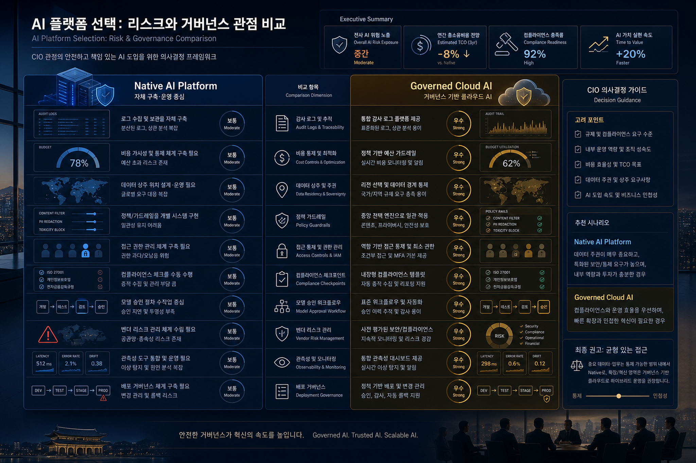

클라우드 마켓플레이스 기반 AI 구매
AWS Marketplace 청구는 AI 비용을 기존 클라우드 조달·예산·태그 체계와 연결한다. 구매 부서는 별도 SaaS 계약보다 통합 지출 관리와 비용 할당을 선호할 가능성이 높다.
AWS Korea Tech Blog 신규 글을 기반으로 Enterprise AI·Data·Cloud 관점에서 오늘의 변화 신호를 읽습니다.
Enterprise AIAgentic AICloud GovernanceFinOps
AWS Marketplace 청구는 AI 비용을 기존 클라우드 조달·예산·태그 체계와 연결한다. 구매 부서는 별도 SaaS 계약보다 통합 지출 관리와 비용 할당을 선호할 가능성이 높다.
AI 플랫폼 접근이 IAM, SigV4, CloudTrail 이벤트로 표현되면 보안팀은 API 키 배포보다 익숙한 감사·권한 모델로 전환할 수 있다.
Claude Code, MCP 커넥터, Agent Skills, 코드 실행, 파일 API는 단순 추론보다 복합 작업 자동화와 개발 워크플로우 생산성에 직접 영향을 준다.
Claude Platform on AWS는 Amazon Bedrock의 Claude 접근과 경쟁만 하는 것이 아니라, 서로 다른 통제 우선순위를 가진 선택지를 만든다. Bedrock은 AWS 관리형 모델 운영·데이터 거버넌스 요구에 강하고, Claude Platform on AWS는 Anthropic 네이티브 기능과 개발자 경험을 AWS 조달·감사 체계에 연결한다.

Claude Code·MCP·Agent Skills를 내부 개발자 워크플로우에 적용해 코드 이해, 문서화, 테스트 보조, 운영 자동화부터 검증한다.
팀·프로젝트·환경별 워크스페이스를 나누고 IAM 정책과 비용 태그를 연결해 실험 비용과 권한을 분리한다.
CloudTrail 데이터 이벤트, Cost Explorer, 예산 알림을 표준 운영 체크리스트로 묶어 Shadow AI 리스크를 낮춘다.
데이터 상주, 보안 경계, 모델 운영 주체가 중요한 업무는 Bedrock 경로와 비교해 사용 기준을 문서화한다.
서울 리전 포함은 네트워크 지연, 내부 심의, 지역 기반 아키텍처 설계에서 긍정적 신호다. 단, 원문은 요청·데이터 처리 경계가 AWS 보안 경계 외부일 수 있음을 명시하므로 업무 등급별 검토가 필요하다.
금융·공공·제조 핵심 데이터는 Bedrock 중심, 개발 생산성·비민감 에이전트 자동화는 Claude Platform on AWS 중심으로 나누는 하이브리드 운영이 현실적이다.
AI CoE는 모델 성능 평가뿐 아니라 워크스페이스, 권한, 비용, 로그, 프롬프트/도구 정책까지 포함한 운영 표준을 제공해야 한다.
| 영역 | 권장 실행 | 검증 지표 | 확인 필요 |
|---|---|---|---|
| 조달·비용 | AWS Marketplace 구독, 비용 태그, 예산 알림 구성 | 팀/워크스페이스별 월 비용, 예산 초과 알림 | 조직 계약·할인 적용 방식 |
| 보안·권한 | IAM 역할 기반 접근, 임시 자격 증명 우선 | 장기 API 키 수, 권한 경계 정책 수립 여부 | 업무별 최소권한 정책 템플릿 |
| 감사 | CloudTrail 관리 이벤트와 추론 데이터 이벤트 로깅 검토 | 감사 로그 보존 기간, 이상 사용 탐지 | 데이터 이벤트 비용·범위 |
| 데이터 거버넌스 | 민감도 등급별 Bedrock/Claude Platform on AWS 사용 기준 분리 | 업무 등급 매핑률, 예외 승인 건수 | 데이터 상주·처리 위치 요구 |
| 운영 확장 | PoC→표준 워크플로우→전사 확산 3단계 로드맵 | 개발 생산성, 결함 감소, 승인 리드타임 | Agent Skills/MCP 보안 검토 |

원문은 Claude Platform on AWS가 Anthropic에서 운영되며 기본 요청과 데이터가 AWS 보안 경계 외부에서 처리된다고 설명한다. 민감 데이터 업무는 반드시 별도 검토가 필요하다.
웹 검색, 웹 페치, 코드 실행, 파일 API, MCP 커넥터는 강력하지만 권한 오남용 가능성이 있다. 도구별 allowlist, 감사 로그, 사용자 교육이 필요하다.
개발자 생산성 도구는 사용량이 빠르게 증가할 수 있다. 워크스페이스별 쿼터, 예산 알림, 사용량 대시보드를 초기부터 구성해야 한다.
수집 원문: AWS의 Claude Platform 소개: AWS 계정을 통한 Anthropic의 네이티브 Claude Platform 시작하기
Image Prompt 1
목적: Hero/전략 아키텍처 이미지
삽입 위치: Hero 영역
image2 prompt: Enterprise AI control plane on AWS, Korean executive technology blog illustration, abstract cloud architecture with Claude Platform on AWS, IAM, CloudTrail, Marketplace billing, secure workspaces, warm professional palette, no logos, readable Korean title text inside image: 'AWS 기반 Claude Platform 전략'
권장 비율: 3:2 landscape
alt: AWS 기반 Claude Platform 전략 아키텍처 인포그래픽
Image Prompt 2
목적: 도입 로드맵 시각화
삽입 위치: 기술 변화의 의미 섹션
image2 prompt: Korean enterprise adoption roadmap for generative AI agents on AWS, three stages: 실험, 통제, 확장, modern infographic style, cloud data governance, developer tools, agent workflow, no brand logos, clean executive blog image
권장 비율: 3:2 landscape
alt: 한국 기업의 AWS 기반 생성형 AI 에이전트 도입 로드맵
Image Prompt 3
목적: 리스크/거버넌스 비교 대시보드
삽입 위치: 리스크/거버넌스 고려사항 섹션
image2 prompt: Risk and governance dashboard for AI platform selection, comparing native AI platform and governed cloud AI, Korean enterprise CIO perspective, audit logs, cost controls, data residency, policy guardrails, elegant dark blue and amber executive illustration, no logos
권장 비율: 3:2 landscape
alt: AI 플랫폼 선택에서 리스크와 거버넌스 관점을 비교한 대시보드